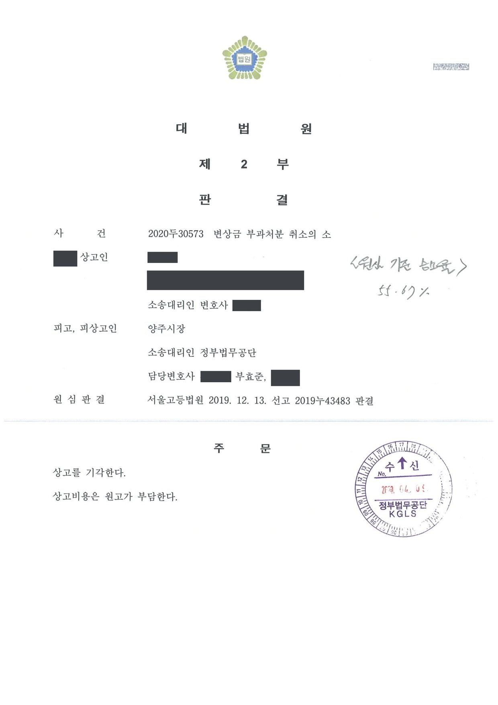

도로법상 변상금 부과처분 취소소송 (2·3심)
서울고등법원 2019누43483 · 대법원 2020두30573 · 담당변호사 부효준
판결문


사건의 요지
도로 점용을 이유로 한 2억 원대 변상금 부과처분에 관하여, 점용 범위의 특정과 변상금 산정의 적법성이 다투어진 사건입니다. 제1심은 처분 전부를 취소하였으나 항소심은 일부 범위에서 처분이 적법하다고 보아 제1심판결을 변경하였고, 대법원은 상고를 받아들이지 않았습니다.
사건의 주요 내용
원고는 일반국도에 접한 토지와 그 위의 근린생활시설 2동, 주유소 건물을 소유하고 있었고, 토지 일부는 철강업체에 임대하여 그 업체가 크레인 등을 설치해 사용하고 있었습니다. 도로관리청인 지방자치단체의 장(처분청)은 2016년 4월 원고가 국도 부지 1,315㎡를 무단점용하였다는 이유로 약 2억 1,462만 원의 변상금을 부과하였다가, 원고가 소를 제기하자 이를 직권으로 취소하고 원고 입회 아래 다시 측량을 하였습니다.
처분청은 2016년 12월 재측량 결과를 바탕으로, 원고가 2011년 4월부터 2016년 3월까지 근린생활시설의 주차장·통로(213㎡), 주유소의 부지·진출입로(480㎡), 임차인 업체의 부지·통로(559㎡) 등 합계 1,252㎡의 도로를 무단점용하였다는 이유로 208,763,880원의 변상금을 다시 부과하였습니다. 원고가 이 처분의 취소를 구한 소송에서 제1심(의정부지방법원 2017구합11041)은 처분 전부를 취소하였고, 처분청이 항소하였습니다. 부효준 변호사는 항소심과 상고심에서 처분청을 대리하였습니다.
원고의 주장
- 처분청이 실제 점용 면적보다 점용면적을 과다하게 산정하였고, 근린생활시설과 임차인 업체 부분은 차량이 자주 드나들지도 않아 '고양된 일반사용'에 해당할 뿐 변상금 부과 대상인 도로 점용이 아니라고 주장하였습니다.
- 임차인 업체가 점용한 부분은 그 업체 소유의 물건이 설치된 것이고 원고는 자기 토지만 나대지로 임대하였으므로 점용 주체는 임차인 업체이며, 원고의 간접점유도 인정되지 않는다고 주장하였습니다.
- 주유소가 폐업·휴업 등으로 36개월간 운영되지 않은 기간은 점용으로 볼 수 없고, 일부 토지는 도로로서 공용개시가 없었거나 묵시적으로 공용폐지되어 행정재산이 아니며, 측량기관의 도면을 신뢰하여 건축한 것이므로 고의·과실도 없다고 주장하였습니다.
- 변상금은 도로관리청이 속한 지방자치단체의 조례에 따라 산정해야 하는데 조례가 2012년 7월 개정되었으므로, 그 이전 기간의 변상금까지 개정 조례를 적용하여 산정한 것은 위법하다고 주장하였습니다.
부효준 변호사의 주장
- 원고는 1996년 주유소 진출입로 공사를 하면서 그 일대를 아스콘으로 포장하여 점용을 시작하였고 당시 점용허가를 신청한 면적(1,541㎡)이 이번 점용토지(1,252㎡)보다 넓었으며, 측량은 원고와 처분청 직원이 도로경계석 등을 기준으로 삼기로 합의한 뒤 여러 차례 재측량으로 확인된 것이므로 점용면적 산정에 잘못이 없다고 반박하였습니다.
- 원고 토지는 점용토지를 거치지 않으면 도로로 출입할 수 없으므로 점용토지는 근린생활시설·주유소·임차인 업체의 부지와 진출입로로 사용되는 도로법상 특별사용에 해당하고, 임차인 업체가 쓰는 부분도 임대차계약의 대상에 포함되어 원고가 간접점유하는 것이라고 주장하였습니다.
- 해당 토지는 1954년 이전에 도로로 개설되어 1971년 일반국도로 지정된 뒤 현재까지 국도의 일부로 관리되고 있어 묵시적 공용폐지를 인정할 수 없고, 주유소 휴업 기간에도 부지와 진출입로는 그대로 점용되었다고 주장하였습니다.
법원의 판단
법원은 도로의 점용은 일반사용과 별도로 도로의 특정 부분을 유형적·고정적으로 사용하는 특별사용을 뜻하고 그 판단은 점용의 주된 용도와 기능에 따라야 한다는 대법원 판례(1999. 5. 14. 선고 98두17906 판결 등)를 전제로, 원고 토지는 점용토지를 거치지 않고는 도로로 진출입할 수 없으므로 점용토지가 일반 공중의 통행에도 쓰이더라도 도로법상 점용에 해당하고, 임차인 업체 부분도 임대차계약의 대상에 포함되어 원고가 간접점유하는 것이어서 변상금 부과대상이 된다고 보았습니다.
주유소 휴업 기간, 묵시적 공용폐지, 고의·과실 부존재 주장도 모두 받아들이지 않았습니다. 다만 변상금 산정기준에 관하여는, 2011년 4월 1일부터 조례 개정 전인 2012년 7월 29일까지는 종전 조례(주된 사용목적이 같거나 유사한 '인접한 토지'의 공시지가 기준)를 적용해야 하는데 처분청이 개정 조례('닿아 있는 토지'의 개별공시지가 기준)를 적용한 것은 위법하다고 보았습니다.
법원은 변상금 산정이 일부 잘못되었더라도 정당한 변상금이 산출되는 때에는 그 초과 부분만 취소해야 한다는 법리에 따라 정당한 변상금을 116,426,520원으로 다시 계산하고, 처분 전부를 취소한 제1심판결을 변경하여 208,763,880원 중 116,426,520원을 초과하는 부분만 취소하고 나머지 청구를 기각하였습니다(2019년 12월). 원고가 상고하였으나 대법원은 2020년 4월 심리불속행으로 상고를 기각하여 그대로 확정되었습니다.
위 법리에 비추어 보건대, 결국 이 사건 변상금을 산정함에 있어 2011. 4. 1.부터 개정 조례가 시행되기 전인 2012. 7. 29.까지는 종전 조례 규정이 적용된다고 봄이 상당하다. 따라서 2011. 4. 1.부터 2012. 7. 29.까지는 종전 조례규정에 따라 당해토지의 공시지가가 없는 경우 당해토지와 지목 등 조건이 유사한 2필지 이상의 인접한 토지의 공시지가를 기준으로 변상금을 산정하여야 하고, 2012. 7. 30.부터 2016. 3. 31.까지는 개정 조례에 따라 '도로점용 부분과 물리적으로 닿아 있는 토지' 중 도로부지를 제외한 토지의 개별공시지가를 기준으로 변상금을 산정하여야 한다.
서울고등법원 2019누43483 판결 이유 '2. 다. 6) 변상금 산정기준 주장에 관한 판단 — (2) 구체적 판단' 부분
국유재산법상의 행정재산 중 도로, 공원과 같은 인공적 공공용 재산은 법령에 의하여 지정되거나 행정처분으로써 공공용으로 사용하기로 결정한 경우 또는 행정재산으로 실제로 사용하는 경우의 어느 하나에 해당하면 행정재산이 된다(대법원 2014. 11. 27. 선고 2014두10769 판결 참조). 공용폐지의 의사표시는 묵시적인 방법으로도 가능하나 행정재산이 본래의 용도에 제공되지 않는 상태에 있다는 사정만으로는 묵시적인 공용폐지의 의사표시가 있다고 볼 수 없고, 국가의 묵시적인 의사표시가 있다고 인정되려면 공물이 사실상 본래의 용도에 사용되고 있지 않다거나 행정주체가 점유를 상실하였다는 정도의 사정만으로는 부족하고, 주위의 사정을 종합하여 객관적으로 공용폐지 의사의 존재가 추단될 수 있어야 한다(대법원 2009. 12. 10. 선고 2006다87538 판결 참조).
서울고등법원 2019누43483 판결 이유 '2. 다. 4) 행정재산이 아니라는 주장에 대한 판단' 부분
외형상 하나의 행정처분이라 하더라도 가분성이 있거나 그 처분대상의 일부가 특정될 수 있다면 그 일부만의 취소도 가능한바, 변상금 부과처분 취소소송에서 변상금 액수 산정이 잘못되어 그 일부가 위법한 것으로 판단되고, 사실심 변론종결시까지 제출된 자료에 의하여 적법하게 부과할 수 있는 변상금이 산출되는 때에는 법원은 변상금 부과처분 전부를 취소할 것이 아니라 그 중 정당한 변상금을 초과하는 부분만 취소하여야 한다. 원고의 이 사건 각 토지의 무단점용으로 인한 정당한 변상금 액수는 별지 4 도로점용료(변상금) 산출 내역 기재와 같다. 따라서 원고에 대한 변상금 208,763,880원 중 정당한 변상금인 116,426,520원을 초과하는 부분만을 취소하여야 한다.
서울고등법원 2019누43483 판결 이유 '2. 다. 6) 나) 이 사건 처분의 취소 범위' 부분
※ 판결 이유 가운데 이 사건의 판단 기준이 된 부분을 그대로 옮긴 것으로, 당사자 이름 등은 가렸습니다.
이 사건이 보여 주는 것
도로 변상금 사건에서는 점용 면적·기간·주체뿐 아니라 변상금 산정의 기준이 된 조례와 시행령이 점용 기간 중에 개정되었는지도 함께 살펴야 합니다. 이 판결은 조례 개정 전 기간에 개정 조례를 적용한 부분만 위법하다고 보아, 처분 전부를 취소한 제1심과 달리 정당한 변상금을 다시 계산해 그 초과 부분만 취소하였습니다. 처분청으로서는 산정 근거 자료를 변론종결 전까지 제출해 두면 산정에 일부 잘못이 있어도 처분 전체가 취소되는 결과를 피할 수 있습니다.
또한 토지 소유자가 임차인에게 자기 토지만 임대하였더라도 임차인이 인접 도로를 부지·통로로 함께 쓰고 있다면 임대차계약의 해석에 따라 소유자가 도로를 간접점유하는 것으로 평가될 수 있고, 건물의 휴업 기간이나 묵시적 공용폐지 주장만으로는 점용 사실을 부인하기 어렵습니다.
비슷한 처분을 받으셨다면
행정처분은 처분이 있음을 안 날부터 90일 이내에 행정심판이나 취소소송으로 다투어야 하고, 기간이 지나면 돌이킬 수 없는 처분은 집행정지를 서둘러야 합니다. 처분서를 받은 날짜부터 확인해 드립니다.